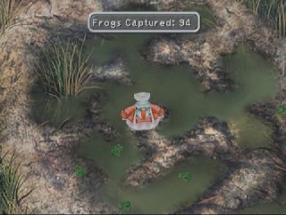
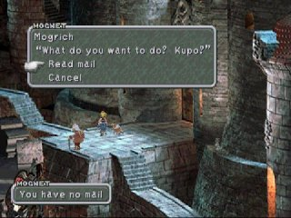
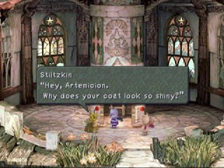
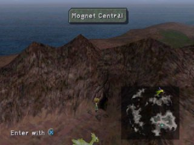
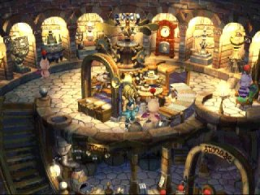
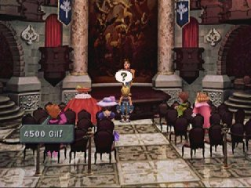
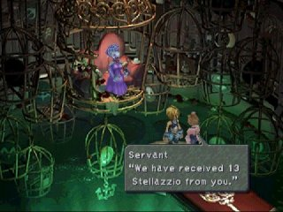

|
Mini Game
ภาค 9 นี้ จะมี Mini Game ซ่อนอยู่หลายเกม
- Frogs Captured
- Mognet Central
- Bidding (ประมูลสิ่งของ)
- Stellazzio
- Battle in Treno
- Friendly Mosters
- Ragtime Mouse
- Card Games
- Chocobo
- มินิเกม อื่นๆ
- Frog Captured
Quina สามารถจับกบได้ที่หนองน้ำ Qu ซึ่งเมื่อจับกบได้ตามจำนวน Quale จะออกมามอบ
item ให้

ซึ่ง item ต่างๆ ที่ได้จะมีดังนี้
2 ตัว Ore
5 ตัว Ether
9 ตัว Silk Robe
15 ตัว Elixir
23 ตัว Silver Fork
33 ตัว Bistro Fork
45 ตัว Battle Boots
99 ตัว Gastro Fork
และเมื่อจับได้ครบ 99 ตัว Quale จะออกมาสู้กับเรา
การจับกบจะทำให้ Skill Frog Drop มีความรุนแรงเพิ่มขึ้น
พลังโจมตีของท่านี้ จะเท่ากับ Level ของ Quina X จำนวน "กบ" ที่จับได้
ดังนั้น หาก Quina มี Level 70 และจับ "กบ" ได้ 105 ตัว ก็จะได้
damage เท่ากบ 70 X 105 = 7,035
- Mognet Central
Mini Game นี้ จะเป็นการส่งจดหมายของเหล่าบรรดา Mog
โดยเราต้องทำตัวเป็นบุรุษไปรษณีย์ คอยส่งจดหมายที่ Mog แต่ละตัวฝาก

ในบางครั้งจะเจอ Mog ตัวสีเหลือง (Stiltzkin) มาขายของ ให้ซื้อทุกครั้งเพื่อเป็นเงินทุนให้แก่เขา

เมื่อมี Chocobo สีทอง ที่สามารถบินได้แล้ว ให้มายังบริเวณดังรูป
และให้ Chocobo ขุดบริเวณนั้น จะเจอ Mognet Central

เมื่อเข้าไปด้านในจะพบเหตุการณ์บางอย่าง

- Bidding (ประมูลสิ่งของ)
ภายในเมือง Treno จะมีห้องประมูลอยู่ เมื่อเข้าไปจะสามารถประมูลสิ่งของได้
ซึ่งสิ่งของบางอย่าง ไม่สามารถหาได้จากที่อื่นเลย
เทคนิคในการประมูลสิ่งของ ให้เรารอคอยอย่างใจเย็น จนกระทั่งไม่มีคนขึ้นราคาสิ่งของแล้ว
โดยผู้ทำการประมูลจะถามว่า "Any more ?"
จึงค่อยเสนอราคา จะทำให้ได้สิ่งของนั้นมาในราคาที่ไม่แพงนัก

- Stellazzio
ภายในเมือง Treno จะมีหญิงที่ต้องการเหรียญตราประจำราศีทั้ง 12 เหรียญ
เมื่อสามารถหาเหรียญไปให้เธอได้จะได้รางวัลตอบแทนมา
และเมื่อสามารถหาเหรียญไปให้ได้ 12 เหรียญ จะทราบความลับ
นั่นก็คือ มีเหรียญที่ 13 อยู่ ซึ่งเมื่อหาเหรียญที่ 13 มาให้เธอได้
จะได้รับ item พิเศษ 1 ชิ้น นั่นก็คือ Hammer ซึ่งนำไปสร้าง Tin
Armor ได้

สถานที่เก็บเหรียญทั้ง 12 เหรียญ มีดังนี้
- Aries โรงสีลมที่หมู่บ้าน Dali
- Taurus หลังร้านขาย Item ที่เมือง Treno (ในสลัม)
- Gemini โยนเงิน 10 gil ลงในบ่อน้ำพุ 13 ครั้งติดต่อกัน
- Cancer หลังเกวียนที่คว่ำ ทางเข้า Burmecia
- Leo ใกล้ๆ กับรูปปั้นของ Neptune ที่จะนำไปสู่ท่าเรือเมือง Alexandria
- Virgo โรงแรมในหมู่บ้าน Black Mage
- Libra บ่อน้ำด้านขวาใน Madain Sari
- Scorpio อยู่ด้านล่างของน้ำเพิ่มพลังใน Quan's Dwelling
- Sagittarius เก็บเมื่อไม่มีถุงผัก Gysahl Pickle บนรถในเมือง Lindblum
(ในระหว่างที่มีการซ่อมแซม)
- Capricorn ในน้ำทางขวาของทางเข้า Daguerreo
- Aquarius หีบทางขวาที่ทางเข้าของปราสาท Ipsen
- Pisces หีบในเรือ Invincible airship
- Ophiuchus เมื่อรวบรวมเหรียญครบทั้ง 12 เหรียญ ให้ไปเก็บที่ที่พบเหรียญ
Scorpio
และรางวัลที่ได้จากการเก็บเหรียญ มีดังนี้
1st coin 1000 Gil
2nd coin Phoenix Pinion
3rd coin 2000 Gil
4th coin Blood Sword
5th coin 5000 Gil
6th coin Elixir
7th coin 10000 Gil
8th coin Black Belt
9th coin 20000 Gil
10th coin Rosetta Ring
11th coin 30000 Gil
12th coin Robe of Lords
13th coin Hammer
- Battle in Treno
ในเมือง Treno ที่ร้านขายอาวุธ จะสามารถต่อสู้กับสัตว์ที่ขังอยู่ชั้นใต้ดินได้
หากต่อสู้ชนะจะได้ item ตอบแทนมา
ซึ่งสัตว์นั้นจะมีอยู่ 4 ตัว
สามารถสู้ได้ใน แผ่น 2 คือ Griffin แผ่น 3 คือ Catoblepas และ Amdusias ในแผ่น
4 คือ Behemoth
(หากผ่านไปแล้ว จะกลับไปสู้กับสัตว์ในแผ่นเก่าไม่ได้)
เมื่อสู้ชนะจะได้ item ตอบแทนดังนี้
Griffin (Disc 2) Tonberry Card
Catoblepas (Disc 3) 15000 Gil
Amdusias (Disc 3) Running Shoes
Behemoth (Disc 4) Circlet
* Trick ในการต่อสู้กับ Griffin
ในตอนนั้นจะต้องใช้ Steiner ต่อสู้เพียงลำพัง อีกทั้งในตอนนั้น Steiner ยังไม่เก่งด้วย
วิธีชนะแบบง่ายๆ ก็คือ ให้สะสมเหรียญ Stellazzio ให้ครบ 4 เหรียญ
และเอาไปแลก Blood Sword ซึ่งจะทำให้สามารถสู้ได้ง่ายยิ่งขึ้น
- Friendly Mosters
ในระหว่างการต่อสู้ บางครั้งจะเจอศัตรูบางชนิดเสียงเพลงจะเปลี่ยนไป
พวกมันจะไม่โจมตีเรา แต่จะขอสิ่งของแทน
หากให้สิ่งของที่มันต้องการ มันจะให้ AP และสิ่งของตอบแทนเรามา
พวกมันจะมีทั้งหมด 9 ตัว แต่ตัวที่ 9 จำเป็นต้องพบกับ 8 ตัวแรกก่อน
หากหาพวกมันครบทั้ง 9 ตัว และได้รับสิ่งตอบแทน คือสามารถโจมตีศัตรูที่ลอยอยู่ในระยะไกลด้วยกำลังได้
นั่นคือ สามารถโจมตี Ozma ได้โดยการโจมตีแบบธรรมดา
แต่จะมีศัตรูอยู่ตัวหนึ่ง คือ Gimme Cat ตัวนี้จะเป็นตัวหลอก มันไม่ใช่ศัตรูที่เป็นมิตรที่แท้จริง
ไม่จำเป็นต้องให้อะไรกับมัน
ต่อไปจะเป็นรายชื่อ ศัตรูที่เป็นมิตรทั้งหมด ดังนี้
- Brown Mu เจอได้ที่ ที่ราบระหว่าง Ice Cavern และหมู่บ้าน Dali
สิ่งที่ต้องการ 1 Ore เมื่อให้แล้วจะได้รับ 10 AP, Potion
- White Ghost เจอได้ที่ ที่ราบรอบๆ Treno ทิศตะวันตกของเมือง
สิ่งที่ต้องการ 1 Ore เมื่อให้แล้วจะได้รับ 10 AP, Hi-Potion
- Color Ladybug ป่ารอบๆ หมู่บ้าน Black Mage
สิ่งที่ต้องการ 2 Ores เมื่อให้แล้วจะได้รับ 20 AP, Ether
- Green Yeti ป่าที่ใหญ่ที่สุดทางตะวันออกเฉียงใต้ของหมู่บ้าน Madain Sari
สิ่งที่ต้องการ 2 Ores เมื่อให้แล้วจะได้รับ 20 AP, Elixir
- Green Nymph ป่าใกล้ๆ กับต้น Iifa Tree
สิ่งที่ต้องการ 3 Ores เมื่อให้แล้วจะได้รับ 30 AP, Emerald
- Purple Jabberwock ป่าด้านตะวันออกจาก Oeilvert
สิ่งที่ต้องการ Emerald เมื่อให้แล้วจะได้รับ 40 AP, Moonstone
- Green Feather Circle ทวีป Lost Continent ทิศตะวันออกจากปล่องภูเขาไฟ
สิ่งที่ต้องการ Moonstone เมื่อให้แล้วจะได้รับ 30 AP, Lapis Lazuli
- Rainbow Garuda ป่าด้านตะวันออกบนที่ราบสูงเหนือถ้ำ Gizamaluke
สิ่งที่ต้องการ Lapis Lazuli เมื่อให้แล้วจะได้รับ 40 AP, Diamond
- Friendly Yan ป่าบนเกาะ Vile Island
สิ่งที่ต้องการ Diamond เมื่อให้แล้วจะได้รับ 50 AP, Rosetta Ring
* ในการเจอกับ Friendly Yan หากไม่เจอศัตรูที่เป็นมิตรทั้ง 8 ตัวก่อนหน้านี้
Friendly Yan จะหนีคุณไป ซึ่งไม่สามารถจะให้สิ่งของกับเขาได้
- Ragtime Mouse
ในระหว่างการต่อสู้บางครั้ง จะเจอศัตรูบางชนิดเสียงเพลงจะเปลี่ยนไป
มันจะถามคำถามเรา ให้เราตอบว่า "ถูก" หรือ "ผิด"
โดยการโจมตีไปที่เครื่องหมาย "วงกลม" หรือ "กากบาท"
เขาจะถามทั้งหมด 16 คำถาม หากตอบถูก ในแต่ละครั้งจะได้รับ Gil เป็นผลตอบแทน
ดังนี้
ครั้งที่ 1 ได้รับ 1,000 Gil
ครั้งที่ 2 ได้รับ 1,000 Gil
ครั้งที่ 3 ได้รับ 1,000 Gil
ครั้งที่ 4 ได้รับ 2,000 Gil
ครั้งที่ 5 ได้รับ 2,000 Gil
ครั้งที่ 6 ได้รับ 3,000 Gil
ครั้งที่ 7 ได้รับ 3,000 Gil
ครั้งที่ 8 ได้รับ 4,000 Gil
ครั้งที่ 9 ได้รับ 4,000 Gil
ครั้งที่ 10 ได้รับ 5,000 Gil
ครั้งที่ 11 ได้รับ 5,000 Gil
ครั้งที่ 12 ได้รับ 6,000 Gil
ครั้งที่ 13 ได้รับ 6,000 Gil
ครั้งที่ 14 ได้รับ 7,000 Gil
ครั้งที่ 15 ได้รับ 7,000 Gil
ครั้งที่ 16 ได้รับ 10,000 Gil
จะมีคำถามและคำตอบ ดังนี้
- "I Want to Be Your Canary" was written by Lord Afon. X:False
คำตอบที่ถูกต้องคือ It was written by Sir Avon.
- The 15th Lindblum War started in 1600. X:False
คำตอบที่ถูกต้องคือ It began in 1601.
See the statues of three men of Plutes in Alexandria square.
- The Theater Ship Prima Vista was built in Artania Shipyards X:Fals
คำตอบที่ถูกต้องคือ It was built in Zebolt dockyard.
Read the explanation of Prima Vista at the opening of the game,
where Zidane appears in a dark room with a candle.
- Lindblum Castle is larger than Alexandria Castle. O: True
- Some Mu's are friendly and won't attack. O:True
- Burkmea Cable Cars have been running for 8 years. O: True
- There is only one desert in the world. X: False
คำตอบที่ถูกต้องคือ There are Vub desert, where Cleyra is located,
and Kierra desert, where Desert Empress is located.
- Conde Petit is a village of Goblins. X: False
คำตอบที่ถูกต้องคือ It's a home for dwarves.
- Prima Vista means love at first sight. X: False
- Treno's caf?, Card Carta, is members only. O: True
- Bobo Bird is a bird that brings you fortune. X: False
คำตอบที่ถูกต้องคือ It is said to be a bird which gives you happiness.
- You can defeat Ragtimer. O:True
- Chocobo Forest is located between Lindblum and South Gate O: True
ในระหว่างสู้กับ Ragtime Mouse จะมีเงื่อนไขดังนี้
- หากตอบคำถามช้ากว่า 20 วินาที ถือว่าตอบผิด
- หากคุณโจมตี หรือใช้เวทย์กับ Ragtime Mouse เขาจะหนีไป
- วิธีชนะเขามีวิธีเดียวคือ ตอบคำถามให้ถูกต้องหมดทั้ง 16 คำถาม หลังจากนั้นจึงสามารถโจมตีเขาได้
เมื่อชนะเขาจะได้รับ EXP: 5963/ AP: 0/ items: protective ring/ Gil: 5963
Gil
หากคุณตอบผิดเพียงข้อเดียว จะได้รับเพียง Protective ring เพียงอย่างเดียว
- มินิเกม อื่นๆ
นอกจากมินิเกมที่ได้กล่าวมาแล้วข้างต้น ยังมีมินิเกมย่อยอีกมากมาย เช่น
- วิ่งแข่งกับฮิปโป (Racing Hippaul)
จะวิ่งแข่งกับฮิปโปได้ในช่วงเริ่มต้นแผ่น 3 ในขณะบังคับ Vivi คนเดียว ในเมือง
Alexandria
เดินลงมาบริเวณด้านล่างของเมืองจะเจอ Hippaul คุยกับแม่ของเขา จะเล่นมินิเกมนี้ได้
เมื่อแข่งชนะเขา ทุกๆ 10 ครั้งจะได้ item มา ดังนี้
10 Wyerd Card
20 Carrion Worm Card
30 Tantarian Card
40 Armstrong Card
50 Ribbon Card
60 Nova Dragon Card
70 Genji Card
80 Athlete Queen (Key Item)
- Rope Jumping
สามารถเล่นมินิเกมนี้ได้ตั้งแต่แผ่น 1 เมื่อ Vivi เจอเด็กผู้หญิงเล่นกระโดดเชือกอยู่ใน
Alexandria
และสามารถเล่นได้อีกครั้งในตอนท้ายแผ่น 3 และในแผ่น 4
หากมี Vivi หรือ Eiko รวมอยู่ในกลุ่มด้วย
เมื่อสามารถกระโดดได้ถึงระดับหนึ่ง พวกเธอจะให้ item ด้วย ดังนี้
20 Jumps 10 Gil
50 Jumps Cactuar Card
100 Jumps Genji Card
200 Jumps Alexandria Card
300 Jumps Tiger Racket Card
1000 Jumps King of Jump Rope (Key Item)
- Nero Brothers' Gambling
เล่นเกมทายเหรียญกับพี่น้องตระกูล Nero (Benero, Genero และ Zenero) ได้
ในช่วงเริ่มแผ่น 3 ที่เมือง Alexandria ในร้านขายอาวุธ
- Blackjack
เมื่อเล่นเกมจบ และดูฉากจบจนถึงข้อความ "THE END"
ให้กดปุ่มดังนี้
R2, L1, R2, R2, ขึ้น, X, ขวา, วงกลม, ลง, สามเหลี่ยม, L2, R1, R2, L1, สี่เหลี่ยม,
สี่เหลี่ยม, Start
จะสามารถเล่นเกม Blackjack ได้
|